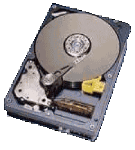

Servicios
En ECOSISTEM nos vamos a encargar de proporcionar diferentes servicios, siempre intentando mirar por la sostenibilidad y reutilización. Vamos a proporcionar 3 servicios principales:
Instalación de sistema operativo
Borrado seguro de datos

Además de esto, con el fin de alargar la vida a equipos informáticos y poder reutilizarlos, en ECOSISTEM tenemos un servicio de donado de ordenadores; recibimos y donamos ordenadores.
El transporte, tanto de recogida como de entrega de equipos corre por cuenta de nuestra empresa, ya que queremos fomentar la donación de equipos para su posible reutilización en el mercado.
Lo primero que hacemos es comprobar si funcionan o no.
Si el ordenador funciona, se le aplica el servicio de borrado seguro de datos e instalación de sistema operativo (se instala Linux). A continuación, se almacena con el fin de donarlo a alguna entidad que lo necesite
Si el ordenador no funciona se desmonta por piezas. Dichas piezas las utilizáremos para montar ordenadores o sustituir piezas de algún ordenador que no funcione en caso de que fuese necesario.